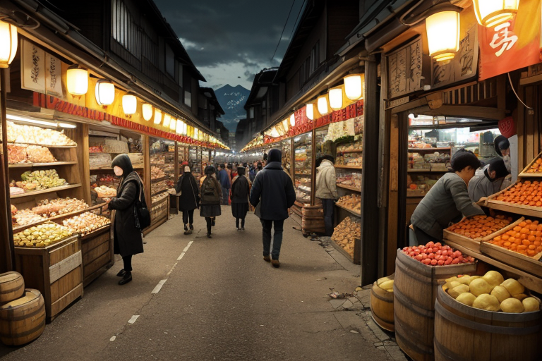
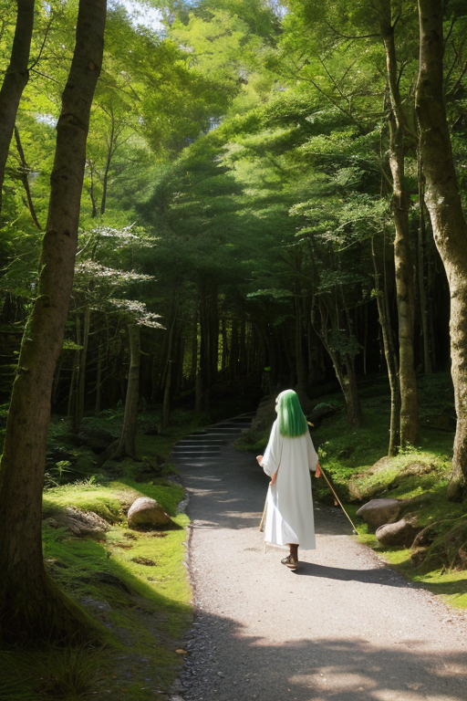
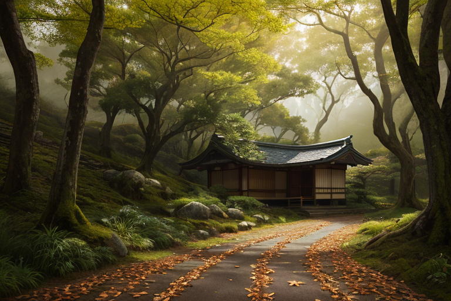
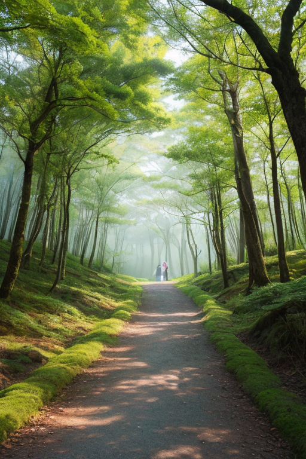
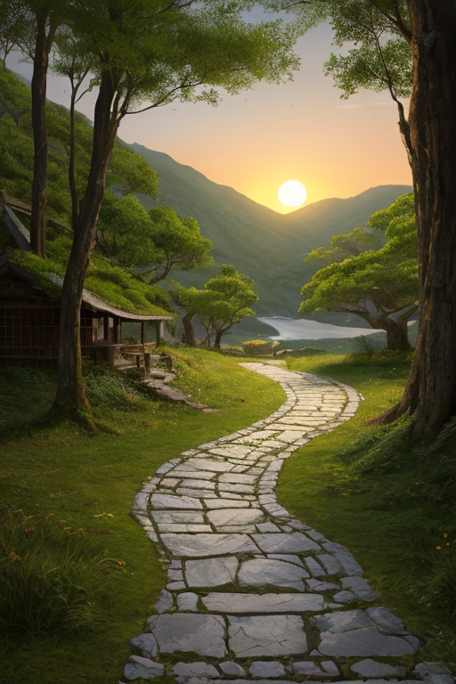

第一章 現実の和歌山
あなたはまだ気づいていない。この土地にも、王がいることを。
和歌山市の中央市場は早朝から活気に満ちていた。トラックが行き交い、威勢のいい掛け声が飛び交う。紀州みかんの山、樽に詰められた梅干し、燻した備長炭の束。商人たちの手には札束が握られ、欲望と生活がせめぎ合う。ここは商都線、金と物と人の流れが交差する場所だ。その喧騒の底で、ほんの僅か、地面が軋む。プレートの歪みが蓄積する、かすかな音。誰も気にしない。商いの波音にかき消されて。
市場の片隅、老舗の乾物屋の軒先に、一人の青年が佇んでいた。白いシャツに緑のジャケット。彼の目は、通り過ぎる人々の足元、荷車の車輪、流れる金銭の行方を優しく追っている。彼の名はキイリア・パスウェイ。この地の王だ。彼は何も生み出さない。ただ、ここに集まる無数の「道」―商いの道、生活の道、人生の道―が、あまりに急な曲がり角で途絶えぬよう、ほんの少し、その流れを調整している。歪みは消せない。だが、転ぶ荷車の輪が、ぎりぎりで溝を回避する「偶然」を、彼は仕込むことができる。

第二章 歪みの兆候
熊野古道の石畳は、今日も巡礼者の靴底に磨かれていた。だが、キイリアは足元ではなく、人々の肩の力、息づかい、財布の紐の緩み具合を見ていた。紀州みかんの出荷量は平年並みだ。梅干しの樽は市場に並ぶ。しかし、数字の下を、見えない亀裂が走り始めている。ある老舗旅館の資金繰りが、なぜか三つの取引先で同時に滞る。観光バスのルート上で、小さな土砂崩れが起こる確率が、統計的に僅かに上昇した。それは、この地を流れる「信頼」と「安全」という道そのものが、目に見えぬ圧力を受け、微細に軋み始めている証だった。
キイリアは白浜の喧噪の中に立つ。海水浴客の笑い声の裏で、ある民宿の主人が、明日の仕入れの金に頭を抱えている。彼は指を軽く動かした。隣町の資材屋の主人が、ふと十年ぶりにその民宿を思い出し、連絡を取る「気まぐれ」を起こすように。王の仕事は、道が完全に崩れる前に、ほんの少しの「続き」を作ることだ。

第三章 王の葛藤
熊野古道の杉並木を、巡礼者の群れが黙々と歩く。彼らの足元では、地盤のわずかな緩みが、落ち葉の下で静かに進行していた。キイリアは古道沿いの茶屋の軒先に佇み、その緩みを感知する。彼の役目は、巡礼者の歩幅を無意識に半歩広げさせ、その加重点を安全な場所に分散させることだ。しかし同時に、彼は茶屋の老婆が、客足の減るこの時期をどう乗り切るかという切実な思いも、波のように感じ取っていた。
慈悲の感情は、時に重い問いを投げかける。歪みを調整するためには、人の流れや金の流れという「道」そのものに介入せねばならない。ある商人の強欲な計画を潰し、別の者の慎ましい商いをほんの少し後押しする。それは、まるで神の采配のようで、キイリアはそれを厭った。彼は導く者であって、決める者ではなかったはずだ。
「パセラ、これは正しいのだろうか」
「王よ。道を『続ける』ことが、時に道そのものを『選ぶ』ことになるのです」
主席妖精の言葉は優しく、そして残酷だった。歪みを直す微調整が、結果として誰かの人生の路を決めてしまう。巡礼王は、自らの内に芽生えた慈悲が、この地の濃密な人間の欲望と混ざり合い、予期せぬ判断を生み出していくことに、静かな葛藤を覚えていた。

第四章 妖精との対話
紀州備長炭の窯元の前で、妖精クマノアは言った。
「王よ。巡礼路は、物資の道でもあるのです」
彼は、巡礼路に沿って流れるものは信仰だけではないと説明した。熊野の杉、みかん、梅干し。そして炭。人々の欲望と必要が、道を太くし、時に歪ませる。商都線の世界では、その流れが特に濃密だった。金が巡礼の清さを濁すのではない。金もまた、人を動かし、道を支える一つの信仰なのだと。
「歪みは、流れが滞るとき、あるいは一極に集中するときに生じます」
パセラが優しく付け加えた。
「私たちの調整は、流れを『止めない』こと。道が続くように、微かに手を貸すだけです」
巡礼王は、白浜の活気ある市場を見下ろしながら思った。人の営みそのものが、聖なるものと俗なるものの混ざり合った巡礼路なのだ。彼の慈悲は、その全ての流れを「続けさせたい」と願っていた。それが時に、特定の結果を選び取ることに繋がるとしても。

第五章 微調整と余韻
友ヶ島の旧砲台跡に、夕陽が沈んでいく。廃墟と海とが、黄金色に染まるその一瞬、巡礼王は微かな調整を行った。明日、ここを訪れる一人の写真家の足元が、わずかに滑りにくくなるように。彼が取るべきショットは、危険な岩場ではなく、安全なこの場所からだ。それは、彼の人生の道を、ほんの数センチだけ続けさせるためのもの。
巡礼路は、時に分岐する。高野山の参道で、迷った巡礼者に吹く風の向き。熊野古道で、疲れた旅人の前に現れる、ちょうど良い大きさの休み石。それは全て、流れを止めず、かといって無理に引っ張らず、ただ「続く可能性」をほんの少しだけ大きくする微調整に過ぎない。
王の慈悲は、特定の誰かを救うことではない。道そのものが、細くとも途絶えずにいること。紀州備長炭の火が消えずに熾き続けるように、巡礼の心が冷めずにいること。それだけを願って、彼は今日も、誰にも気づかれない偶然を紡ぐ。
夕闇が友ヶ島を包み、最初の星が輝き始めた。
あなたの町にも、王がいる。